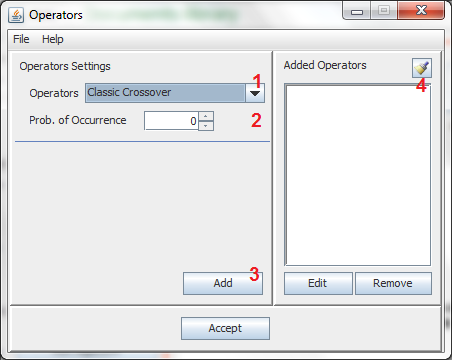

The Genetic Operators are responsible for creating diversity in the new population.
Pressing on the "Operators" button (without the quotes) opens a window like this one:
Each number implies a step in the definition of the operators:
Define Type
Define Probability of Ocurrence
Add Operator
Added Operators